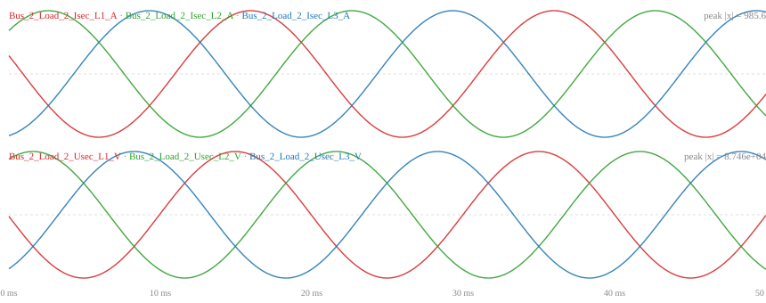

tier 3 · fault_location · local view · regression · all cells measured
Headline metric mae (↓ lower is better); full metric set: mae · rmse · r2 · median_abs_error. Metrics are a frozen contract (src/evemtbench/evaluation/metrics.py); label derivation: src/evemtbench/tasks/labels.

event flt_1phg_shc · grid double_line (adapt_grid/test split) · sample 23, window #529, cubicle 3 (max-RMS) · 50 ms / 480 samples @ 9.6 kHz · top: 3-phase current, bottom: 3-phase voltage · figure provenance in assets/manifest.json
| task | grid | baseline | headline | test | benchmark | params | fit/seed | trace |
|---|---|---|---|---|---|---|---|---|
| fault_location_local | cigre_mv | majority | mae ↓ | 23.915 ± 0.000 (n=5) | 30.351 ± 0.000 (n=5) | — | 0s | trace: output · eval-code · log · train-code · config · W&B |
| fault_location_local | cigre_mv | random_forest | mae ↓ | 24.793 ± 0.039 (n=5) | 32.533 ± 0.025 (n=5) | — | 40s | trace: output · eval-code · log · train-code · config · W&B |
| fault_location_local | cigre_mv | mlp | mae ↓ | 23.943 ± 0.040 (n=5) | 30.530 ± 0.155 (n=5) | 1.6M | 17s | trace: output · eval-code · log · train-code · config · W&B |
| fault_location_local | cigre_mv | gru | mae ↓ | 23.934 ± 0.024 (n=5) | 30.485 ± 0.049 (n=5) | 52k | 33s | trace: output · eval-code · log · train-code · config · W&B |
| fault_location_local | cigre_mv | cnn | mae ↓ | 23.986 ± 0.110 (n=5) | 30.710 ± 0.117 (n=5) | 49k | 30s | trace: output · eval-code · log · train-code · config · W&B |
| fault_location_local | cigre_mv | resnet | mae ↓ | 23.930 ± 0.071 (n=5) | 30.969 ± 0.623 (n=5) | 506k | 1.5m | trace: output · eval-code · log · train-code · config · W&B |
| fault_location_local | double_line | majority | mae ↓ | 24.416 ± 0.000 (n=5) | 31.094 ± 0.000 (n=5) | — | 0s | trace: output · eval-code · log · train-code · config · W&B |
| fault_location_local | double_line | random_forest | mae ↓ | 22.441 ± 0.079 (n=5) | 26.961 ± 0.054 (n=5) | — | 36s | trace: output · eval-code · log · train-code · config · W&B |
| fault_location_local | double_line | mlp | mae ↓ | 19.690 ± 0.037 (n=5) | 15.204 ± 0.163 (n=5) | 1.6M | 55s | trace: output · eval-code · log · train-code · config · W&B |
| fault_location_local | double_line | gru | mae ↓ | 18.600 ± 0.213 (n=5) | 11.695 ± 0.530 (n=5) | 52k | 1.5m | trace: output · eval-code · log · train-code · config · W&B |
| fault_location_local | double_line | cnn | mae ↓ | 19.303 ± 0.179 (n=5) | 15.649 ± 0.432 (n=5) | 49k | 1.6m | trace: output · eval-code · log · train-code · config · W&B |
| fault_location_local | double_line | resnet | mae ↓ | 19.357 ± 0.459 (n=5) | 15.434 ± 1.558 (n=5) | 506k | 3.4m | trace: output · eval-code · log · train-code · config · W&B |
| fault_location_local | testgrid_110kv | majority | mae ↓ | 24.378 ± 0.000 (n=5) | 31.168 ± 0.000 (n=5) | — | 0s | trace: output · eval-code · log · train-code · config · W&B |
| fault_location_local | testgrid_110kv | random_forest | mae ↓ | 23.653 ± 0.042 (n=5) | 27.029 ± 0.048 (n=5) | — | 31s | trace: output · eval-code · log · train-code · config · W&B |
| fault_location_local | testgrid_110kv | mlp | mae ↓ | 20.435 ± 0.046 (n=5) | 17.456 ± 0.118 (n=5) | 1.6M | 53s | trace: output · eval-code · log · train-code · config · W&B |
| fault_location_local | testgrid_110kv | gru | mae ↓ | 18.768 ± 0.171 (n=5) | 10.855 ± 0.572 (n=5) | 52k | 1.5m | trace: output · eval-code · log · train-code · config · W&B |
| fault_location_local | testgrid_110kv | cnn | mae ↓ | 19.727 ± 0.084 (n=5) | 14.990 ± 0.643 (n=5) | 49k | 1.6m | trace: output · eval-code · log · train-code · config · W&B |
| fault_location_local | testgrid_110kv | resnet | mae ↓ | 19.904 ± 0.229 (n=5) | 15.943 ± 0.645 (n=5) | 506k | 2.9m | trace: output · eval-code · log · train-code · config · W&B |
| fault_location_local | ieee39 | majority | mae ↓ | 25.224 ± 0.000 (n=5) | 31.129 ± 0.000 (n=5) | — | 0s | trace: output · eval-code · log · train-code · config · W&B |
| fault_location_local | ieee39 | random_forest | mae ↓ | 24.497 ± 0.022 (n=5) | 28.371 ± 0.035 (n=5) | — | 37s | trace: output · eval-code · log · train-code · config · W&B |
| fault_location_local | ieee39 | mlp | mae ↓ | 22.484 ± 0.027 (n=5) | 21.403 ± 0.013 (n=5) | 1.6M | 60s | trace: output · eval-code · log · train-code · config · W&B |
| fault_location_local | ieee39 | gru | mae ↓ | 22.716 ± 0.097 (n=5) | 21.981 ± 0.495 (n=5) | 52k | 1.1m | trace: output · eval-code · log · train-code · config · W&B |
| fault_location_local | ieee39 | cnn | mae ↓ | 22.981 ± 0.326 (n=5) | 22.972 ± 0.660 (n=5) | 49k | 58s | trace: output · eval-code · log · train-code · config · W&B |
| fault_location_local | ieee39 | resnet | mae ↓ | 23.077 ± 0.317 (n=5) | 23.973 ± 0.637 (n=5) | 506k | 2.2m | trace: output · eval-code · log · train-code · config · W&B |
headline & reported metrics for this view — the metric set is a frozen contract; each links to the exact function that computes it
| metric | definition | entry |
|---|---|---|
mae | mean absolute error, in the grid's own distance units | evaluate() |
rmse | root mean squared error | evaluate() |
r2 | coefficient of determination 1 − SS_res/SS_tot | evaluate() |
median_abs_error | median of absolute errors | evaluate() |
PYTHONPATH=src python -m evemtbench.baselines.runner --task fault_location_local --protocol held_out \
--grid <grid> --baseline <baseline> --seeds 0 1 2 3 4